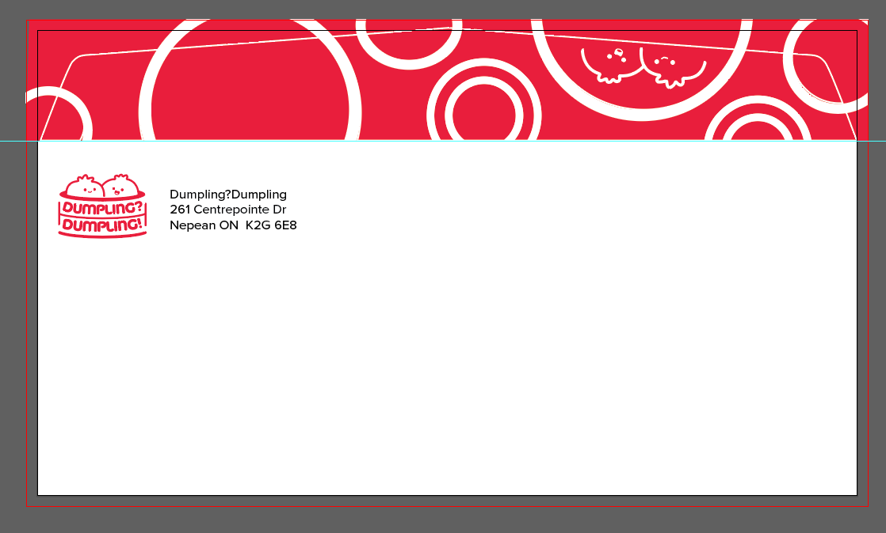

Sketching Partner Meet Up Jan. 22
Here is the link to book your meeting. Make sure you and partner are both on board for this and come to meeting prepared to discuss each others sketches.
18 announcements from the Winter 2025 term, in date sequence.
Here is the link to book your meeting. Make sure you and partner are both on board for this and come to meeting prepared to discuss each others sketches.
I really enjoyed the the session today. Made my day. The interaction and collaboration on all your concepts was great. I love this process and to see the development at this stage is very impressive on your part. Can't wait to see the next stage.
Booking schedule is now available for this weeks class
What a great session for this weeks class. I really enjoy this process to see your logos come to life. In the assessment area any comments or images that I sent are just a follow up from the great discussions we all had and was just me seeing what your logos would look like from those suggestions. In the end you will make the best decision on what you feel is working best for your designs.
Great presentations today. I really enjoyed it.
For your final submission of the chosen logo make sure that you include your final docket/time sheet with total hours and include your quote at the bottom and the final total $ for completed job. This would be a single pdf so two files - final logo submission and docket/time sheet.
Put in your original quote from day one - I have a copy of all quote sheets so. Then add up all your time and extras xs your rate and fill out the final total in $. We want to see how close you came to your original quote.

Booking times are now available - I have them starting earlier since we are not meeting in pairs - hopefully it will go quick and get everyone in before 4
After our meeting today you will finalize your stationery package and submit to Brightspace. The instructions for final submission or on Brightspace.
The project for the Branding Guide is now open. Please read over the project requirements. Scan through the presentation . Samples are there for you to look at. We are looking at this guide to be a self cover which means that when printed it would be printed on different paper than the inside. Some of the samples do not have the correct page numbering at this point. We will discuss page numbering etc next week. The samples are just for a guide to get you started. If you do not understand anything just text me to discuss but will also address any concerns in our one on one next week. You will start by sketching/thinking about your layout - what style of grid - design - what the design flow from page to page will be - remember the brand/colours can be used throughout as well as tints of those colours. You will be building this in InDesign.
Just a reminder about your artwork for Stationery. All colours are to be spot colours of brand. You can use tonal value of spot colours for accent colour. Not transparency or opacity. Of course no tonal value in logo. If you have a die cut on the business card your artwork should have a layer with the die lie and the die line would be a different spot colour than that of your brand colours. So you would have a layer of side one - a layer for side two and a layer for the die cut. Your artwork should only contain the imagery and specific colours of your pieces - take off anything extra like the stamp and the address on the envelope in the middle (where it would be sent address). Do not label artwork. You are only supplying the actual artwork to size and not the layout that you are doing for the pdf submission. All art work (ai files) should be single files. You do not have to do a die cut for stationery for this submission. Remember if artwork bleeds then artwork will indicate bleeds. Any questions just ask.
Final Submission Requirements
Digital Submission: (submitted via Brightspace)
One PDF containing the following:
1) Page with front and back layout of business card
2) Page with letterhead layout
3) Page with envelope front and back (an open version of the envelope if you have colour on the inside)
Plus all your working files (Illustrator or InDesign packaged file)
Separate ai files for
1) Letterhead - if bleed - indicate bleed on artwork
2) Business card - if your business card has a die cut then your artwork will be set up with a layer for the die line - die line art is a spot colour different than your artwork colours - indicate bleeds if needed.
3) Envelope - if bleeds then artwork shows bleeds - you do not have to do a die cut for this but if there is image/colour on the fold over closer you have to set up artwork for that as shown below - the white line just shows where the die line would be - you can indicate this or leave off. - Do not have the stamp or address of person letter is being sent. That was for mock up only.

All files are to be put in a folder (Your FULL name) and compressed.An announcement for Section 030 was sent to Section 010 in error in regards to class starting time
We do not have to have a formal class tomorrow. Use that time wisely to get ahead. Make sure you upload what is due for tomorrow and include the first section already submitted. I will review your submission promptly tomorrow so that you can make corrections etc. Work ahead for next weeks final section and next week we will set up meetings to go over the entire publication before your presentations. I will be in my office if anyone needs any help etc.
Interactive single page PDF file - this is different from your pdf for print spreads version of the guide in regards to pages
You will create one Interactive PDF file of your logo branding guide (8.5" x 11" landscape or portrait). Export this file as PDF Interactive single pages. Start with the cover, eliminate the inside front cover page and have contents page start after the cover. This is different that the spreads so the cover will now be page #1 no page number and the contents page #2 no page number start page numbers on p3 and so on. Take out the inside back cover page and end on the back cover. For this version you do not need a multiple of 4 page count like you did with the spreads.
The table of contents should link to the start page of each section. So what is listed on p4 in the contents page should link to p4 etc.
Label your PDF accordingly – fullname-section-assignment3.pdf (Example: davidbromley-020-assignment3.pdf)
THIS WILL BE USED FOR YOUR PRESENTATION MARK ON WEEK 14
FINAL SUBMISSION
1) Interactive PDF file
2) Packaged InDesign file - spreads + pdf for print of spreads - show bleeds
Digital: Submitted Final Files via Brightspace to Logo Standards Guide Week 15
When exporting the pdf as interactive, it compresses automatically at 72ppi. Not sure if that is the exact issue but when changing it manually to 300ppi the pdf comes out better.
Image not in the export: View